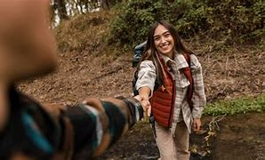

We aim to create a website where people of different ages can find the right place to have fun while interacting withthe natural world. Through Whitewater, they will experience different adventures rafting as the main fun activity. This site will be dedicated to giving all the information that customers need to prepare and fall in love with the Whitewater Rafting Site.

Whitewater Rafting
History
Our company began 20 years ago with the idea of building a space where people can have fun and reflect on our natural world. Our founder found the perfect formula to give people their best experience while taking care of the nature of this beautiful place. White water Rafting has achieved throughout these 20 years that the flora and fauna can live together in harmony with man.
Adventure Awaits You!